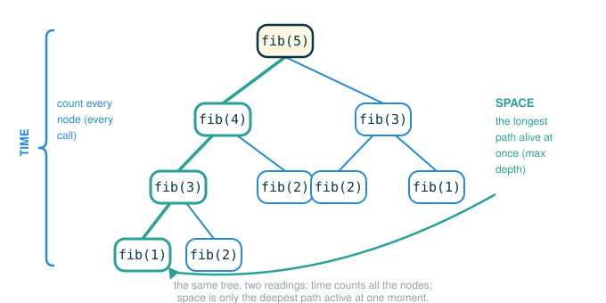

2.8 Measuring Efficiency
By the end of this lesson you will be able to do four things: explain why "how many seconds did it take?" is a shaky way to measure a program, read the tree-recursive fib function and see why it does so much repeated work, wrap any function in a small counter so you can measure exactly how many calls it makes, and tell the difference between time (total work) and space (how much must stay in memory at once).
This lesson assumes you already know how to define a function, how a recursive call works, and what an environment frame is. We are not learning recursion here. We are learning how to measure what a recursive program costs, and the example we measure is one you have likely seen before: Fibonacci.
Two Resources: Time and Space
Every program consumes resources while it runs. The two we care about first are:
- time: how much work the program performs
- space: how much memory the program must hold while it runs
It is tempting to measure time with a stopwatch, but a wall clock lies to you. The same program runs faster on a newer laptop, slower when many other programs are open, and faster the second time because some work is already cached. None of those differences are about the program itself. They are about the room it happened to run in.
So instead of asking only "How many seconds did it take?", we ask a steadier question:
As the input gets larger, how many important events happen?An important event is something the machine actually does, that we can count exactly, the same way on every computer:
- one function call
- one loop iteration
- one list lookup
- one environment frame that must stay active
Counting events instead of seconds gives us a measurement that does not change when you switch laptops. This lesson counts two of those events directly: total function calls (a stand-in for time) and maximum active frames (a stand-in for space).
Counting Work Like Counting Steps in a Recipe
Imagine two ways to make sandwiches.
Recipe A says, plainly:
Make 1 sandwich.
Make 1 sandwich.
Make 1 sandwich.Recipe B sounds clever but hides a cost:
Make 1 sandwich.
Call two friends.
Each friend makes sandwiches by calling two more friends.Both recipes eventually produce sandwiches. But Recipe B branches: one instruction becomes two, those two become four, and the work fans out into a growing tree. The danger is never a single step. The danger is repeated branching, because branching multiplies the number of steps far faster than the answer grows.
That is exactly why Fibonacci shows up in this section. Fibonacci is not here because number sequences are exciting. It is here because the obvious way to write it is a clean, honest example of a program that branches into the same work over and over.
A Bridge to Fibonacci
The Fibonacci sequence begins:
Each number after the first two is the sum of the two before it:
with two base cases that stop the recursion:
You can compute a small value by hand. To get , build up from values you already know:
fib(0) = 0
fib(1) = 1
fib(2) = fib(0) + fib(1) = 0 + 1 = 1
fib(3) = fib(1) + fib(2) = 1 + 1 = 2
fib(4) = fib(2) + fib(3) = 1 + 2 = 3
fib(5) = fib(3) + fib(4) = 2 + 3 = 5So . Hold onto one observation: computing fib(5) did not require solving one smaller problem. It required solving two of them, fib(3) and fib(4). Each of those, in turn, needed two more. That doubling is the whole story of this lesson.
The Tree-Recursive Fibonacci Program
Here is the Fibonacci function exactly as the original text writes it.
# (1)
def fib(n):
if n == 0:
return 0
if n == 1:
return 1
return fib(n-2) + fib(n-1)
print(fib(5))
When you run it, Python prints:
5The two if statements are the base cases: when n is 0 or 1, the function returns an answer directly without calling itself. Those are what keep the recursion from running forever.
The last line is the recursive case, and it is the source of all the work. Read it one token at a time.
return fib(n-2) + fib(n-1)
├─ return ...... hand a value back to whoever called this function
├─ fib ......... the function we are inside of, called again
├─ ( ........... begins the first recursive call's argument
├─ n-2 ......... two less than the current n
├─ ) ........... ends the first call
├─ + ........... add the two results together
├─ fib ......... the same function, called a second time
├─ ( ........... begins the second recursive call's argument
├─ n-1 ......... one less than the current n
├─ ) ........... ends the second call
└─ performs the recursive step: makes TWO smaller fib calls and returns their sumThe token-by-token view makes the cost visible: this one line launches two recursive calls, not one. A function whose recursive case calls itself more than once is called tree recursive, because the calls branch out like a tree. Linear recursion (one call per step) grows a straight chain. Tree recursion grows a fan.
The Shape of the Computation
Watching fib(6) unfold shows why this gets expensive. Python starts at the top:
fib(6)
= fib(4) + fib(5)To get those two answers it must expand each of them, and each expansion produces two more calls, and so on until it bottoms out at fib(0) and fib(1). The full process forms a tree:
fib(6)
├── fib(4)
│ ├── fib(2)
│ │ ├── fib(0)
│ │ └── fib(1)
│ └── fib(3)
│ ├── fib(1)
│ └── fib(2)
│ ├── fib(0)
│ └── fib(1)
└── fib(5)
├── fib(3)
│ ├── fib(1)
│ └── fib(2)
│ ├── fib(0)
│ └── fib(1)
└── fib(4)
├── fib(2)
│ ├── fib(0)
│ └── fib(1)
└── fib(3)
├── fib(1)
└── fib(2)
├── fib(0)
└── fib(1)Look at how many times the same subproblem appears. fib(3) is computed from scratch three times. fib(2) appears five times. The machine is not remembering that it already solved fib(2) a moment ago. It follows the definition of fib literally: the recursive line says to call fib(n-2) and fib(n-1), so it calls them, every single time, no matter how often it has computed that exact value before. This redundant recomputation is the characteristic cost of tree recursion, and it is why this is a famously inefficient way to compute Fibonacci numbers.
A Counter for Function Calls
We claimed fib does a lot of repeated work. Counting events is how we stop guessing and measure it. We want an exact count of how many times fib is called.
Rather than editing fib itself, we use a higher-order function: a function that takes a function as input and returns a new function that behaves like the original but also keeps a tally. Here is the wrapper the original text uses.
# (2)
def count(f):
def counted(*args):
counted.call_count += 1
return f(*args)
counted.call_count = 0
return counted
Before reading the anatomy, two pieces of punctuation deserve attention.
First, *args in the definition def counted(*args) means "collect every positional argument into a single tuple named args." This lets counted stand in for a function that takes any number of arguments, which matters because count should work on any function, not just one-argument ones.
Second, *args in the call f(*args) does the reverse: it "unpacks" that tuple back into separate arguments. The same star symbol packs on the way in and unpacks on the way out:
counted(args) passes the whole tuple as ONE argument
counted(*args) spreads the tuple back into separate argumentsNow read the definition of counted one line at a time. This is the heart of the wrapper.
def counted(*args):
├─ def ......... begins a function definition
├─ counted ..... the name of the new wrapper function
├─ ( ........... begins the parameter list
├─ *args ....... collect all positional arguments into one tuple
├─ ) ........... ends the parameter list
└─ defines the wrapper that will run instead of the original functioncounted.call_count += 1
├─ counted ..... the wrapper function object itself
├─ .call_count . an attribute stored on that function object
├─ += .......... add to the current value and store it back
├─ 1 ........... increase the tally by one
└─ records that one more call has happened, before doing any real workreturn f(*args)
├─ return ...... hand back whatever the original function produces
├─ f ........... the original function that was passed to count
├─ ( ........... begins the call
├─ *args ....... unpack the collected tuple into separate arguments
├─ ) ........... ends the call
└─ evaluates to the original function's result, leaving its behavior unchangedThe two lines after the inner definition finish the setup:
counted.call_count = 0
├─ counted ..... the wrapper function object
├─ .call_count . the attribute we will read later to see the total
├─ = ........... bind it
├─ 0 ........... start the tally at zero
└─ initializes the counter before the wrapper is ever calledreturn counted
├─ return ...... hand a value back from count
├─ counted ..... the finished wrapper function
└─ evaluates to the wrapper, so the caller can use it in place of the originalThe key idea is that call_count is an attribute attached to the function object counted, not a local variable inside any single call. Every call to counted reaches the same shared object and bumps the same shared number, which is exactly why the count survives across all the recursive calls.
A Bridge You Can Verify by Hand
Before measuring fib, wrap something small enough to check by hand. The function square is called exactly once per call you make, so the count should be obvious.
# (3)
def square(x):
return x * x
def count(f):
def counted(*args):
counted.call_count += 1
return f(*args)
counted.call_count = 0
return counted
square = count(square)
print(square(3))
print(square(5))
print(square.call_count)
This prints:
9
25
2You called the wrapped square twice, so square.call_count is 2. Trace why: the line square = count(square) replaces the name square with the wrapper, whose call_count starts at 0. The first call square(3) runs counted, which bumps the count to 1 and then returns 3 * 3. The second call square(5) bumps it to 2 and returns 5 * 5. The counter is just a number on the wrapper object, ticking up once per call. Because you can predict 2 with certainty here, you can trust the same mechanism when the count is too large to follow by hand.
Measuring Calls in Fibonacci
Now point the same counter at fib. The wrapping line fib = count(fib) rebinds the name fib to the counted version, so when the recursive body calls fib(n-2) and fib(n-1), those calls go through the counter too. Every node in that tree gets counted.
# (4)
def fib(n):
if n == 0:
return 0
if n == 1:
return 1
return fib(n-2) + fib(n-1)
def count(f):
def counted(*args):
counted.call_count += 1
return f(*args)
counted.call_count = 0
return counted
fib = count(fib)
print(fib(19))
print(fib.call_count)
This prints:
4181
13529This is the moment the lesson is built around. The answer to fib(19) is 4181, a modest number. But producing it required 13529 calls to fib. The program did vastly more work than the size of its answer suggests, because every one of those duplicated subproblems in the tree was recomputed from scratch.
To feel how fast that grows, here are the call counts for small inputs. You could verify the first few against the fib(6) tree above by counting its nodes.
n |
fib(n) |
total calls |
|---|---|---|
| 2 | 1 | 3 |
| 3 | 2 | 5 |
| 4 | 3 | 9 |
| 5 | 5 | 15 |
| 6 | 8 | 25 |
| 19 | 4181 | 13529 |
The answers grow gently. The call counts explode. That gap between "size of the answer" and "amount of work" is precisely what measuring efficiency is meant to expose.
The Machine Model of Space
Time is only half the picture. A program also occupies memory while it runs, and we measure that with the environment model you already know:
- Evaluating a call expression (a function call) creates a new frame.
- A frame stores that call's local names (for
fib, just the parametern). (Recall that the call counter lived on the function object, not in a frame; here we are counting the per-call frames themselves.) - A frame stays active until its call returns.
- Once a call has returned and nothing still needs its frame, the interpreter can reclaim that memory.
Here is the part that surprises people. The fib(6) tree has dozens of nodes, but the machine never holds all of them in memory at once. It walks the tree depth-first, computing one branch completely before starting the next. At any instant, the only frames that must stay active are the ones on the current path from the top call down to the call being worked on right now.
For example, partway through evaluating fib(6), the active frames might be just:
fib(6) is waiting for its two smaller answers.
fib(4) is waiting for its two smaller answers.
fib(2) is currently being computed.That is three active frames, even though many more calls will happen in total. As soon as fib(2) returns, its frame can be discarded before fib(6) moves on to compute fib(5). The stack of active calls is far shorter than the total number of calls. In general, the space a tree-recursive function needs is proportional to the maximum depth of its tree, not to the total number of calls in it.
This is the central contrast of the lesson: for tree-recursive fib, time grows enormously (every duplicated call costs work) while space grows only with depth (only one root-to-leaf path is alive at a time).
The figure below shows both measurements on the same fib computation tree: time as the total number of call nodes, and space as the longest root-to-leaf path of frames active at once.

Counting Active Frames
We measured time by counting calls. We can measure space the same way, by counting how many frames are active at the same time and remembering the largest such count. The original text uses this wrapper.
# (5)
def count_frames(f):
def counted(*args):
counted.open_count += 1
counted.max_count = max(counted.max_count, counted.open_count)
result = f(*args)
counted.open_count -= 1
return result
counted.open_count = 0
counted.max_count = 0
return counted
The difference from count is the bookkeeping around the call. Read the body of counted line by line.
counted.open_count += 1
├─ counted ..... the wrapper function object
├─ .open_count . how many calls are active right now
├─ += .......... add to it
├─ 1 ........... one more call just opened
└─ records that a new frame is now active, before the real work beginscounted.max_count = max(counted.max_count, counted.open_count)
├─ counted ............ the wrapper function object
├─ .max_count ......... the largest open_count ever seen
├─ = .................. store the result back
├─ max ................ keep whichever is larger
├─ ( .................. begins max's arguments
├─ counted.max_count .. the previous high-water mark
├─ , .................. separates the arguments
├─ counted.open_count . the count right now
├─ ) .................. ends the arguments
└─ updates the running maximum so it never forgets the busiest momentresult = f(*args)
├─ result ...... a local name for what the real call produces
├─ = ........... bind it
├─ f ........... the original function
├─ ( ........... begins the call
├─ *args ....... unpack the arguments
├─ ) ........... ends the call
└─ runs the real call; all of ITS nested calls open and close while we wait herecounted.open_count -= 1
├─ counted ..... the wrapper function object
├─ .open_count . the active-call counter
├─ -= .......... subtract from it
├─ 1 ........... this call is finishing, so one frame closes
└─ records that this frame is no longer active, now that the call has returnedreturn result
├─ return ...... hand the value back
├─ result ...... the saved result from the real call
└─ evaluates to the original function's result, exactly as the caller expectsThe trick is the pairing: open_count goes up the instant a call starts and back down the instant it returns, so at any moment it equals the number of frames currently on the stack. The max(...) line snapshots the peak. Because the increment happens before the recursive f(*args) and the decrement happens after it, the deepest nesting is always captured.
Now run it on fib.
# (6)
def fib(n):
if n == 0:
return 0
if n == 1:
return 1
return fib(n-2) + fib(n-1)
def count_frames(f):
def counted(*args):
counted.open_count += 1
counted.max_count = max(counted.max_count, counted.open_count)
result = f(*args)
counted.open_count -= 1
return result
counted.open_count = 0
counted.max_count = 0
return counted
fib = count_frames(fib)
print(fib(19))
print(fib.open_count)
print(fib.max_count)
print(fib(24))
print(fib.max_count)
This prints:
4181
0
19
46368
24Read each line of output. fib(19) still returns 4181, the correct answer. After it finishes, open_count is back to 0 because every frame that opened also closed. max_count is 19: at the busiest instant, exactly nineteen fib frames were active at once. Then fib(24) returns 46368, and max_count rises to 24.
Notice the pattern in the space measurement. The peak frame counts our wrapper reports track the input directly: max_count is 19 for fib(19) and 24 for fib(24). The original text states the generalization this way:
> To summarize, the space requirement of the fib function, measured in active frames, is one less than the input, which tends to be small.
There is a small accounting gap worth naming, because the wrapper's number and the text's "one less than the input" do not look identical at first. The deepest path the recursion ever stacks runs fib(n), then fib(n-1), then fib(n-2), and so on down the left-most chain. Counting every live fib frame on that path, including the original fib(n) call at the top, gives n frames, which is exactly what count_frames reports: 19 and 24. The text's "one less than the input" counts instead the frames stacked beneath that first call, the extra depth the recursion adds on top of the call you started, which is n - 1. The two descriptions differ only by whether the root frame is included in the tally.
What both descriptions agree on is the part that matters: space for tree-recursive fib grows linearly with the input. Whether you say n or n - 1, doubling the input only adds a fixed amount more memory. Compare that with the time measurement, where fib(19) already needed 13529 calls. Space grows gently and in step with the input (the depth of the tree), while time grows explosively (the size of the tree). Same function, two very different costs. We are describing this growth in plain words for now; the next section gives it a precise name and notation. You do not need that yet.
A Closer Trace: fib(2)
To see frames opening and closing on a tree small enough to follow completely, trace fib(2). The recursive line fib(n-2) + fib(n-1) evaluates left to right, so Python computes fib(0) first, then fib(1).
call fib(2) frames active: fib(2) (max so far: 1)
evaluate fib(0) frames active: fib(2), fib(0) (max so far: 2)
fib(0) returns 0 frame fib(0) closes; value 0 kept
evaluate fib(1) frames active: fib(2), fib(1) (max so far: 2)
fib(1) returns 1 frame fib(1) closes; value 1 kept
fib(2) returns 0 + 1 = 1 frame fib(2) closesTwo things stand out. First, fib(0) and fib(1) are never alive at the same time: fib(0) finishes and its frame is reclaimed before fib(1) even starts, so the most frames ever active at once is 2, not 3, even though there were three calls in total. Second, when a frame closes, Python keeps only the value it returned (0, then 1); it does not keep the frame. That is what "reclaiming a finished frame" means, and it is why space stays small while the tree of calls can be huge.
⚠Common Beginner Traps
Trap 1: Judging efficiency by one small input. fib(5) returns instantly, so it feels free. fib(35) will make your computer pause noticeably. Efficiency is never about one input; it is about how the cost changes as the input grows.
Trap 2: Confusing total calls with active calls. Total calls (what count measures) is a time-like quantity: all the work, summed over the whole run. Active calls (what count_frames measures) is a space-like quantity: how much must be held at once. For fib(19) they are wildly different, 13529 versus 19. They answer different questions.
Trap 3: Believing Python remembers repeated calls. Plain recursion has no memory. If the code says to compute fib(3) again, Python computes it again from scratch, even if it just finished computing fib(3) one branch over. Nothing is cached unless you write the caching yourself.
Trap 4: Treating call_count as a local variable. counted.call_count is an attribute on the function object named counted. There is exactly one such object, so all calls share one counter. If it were a local variable inside counted, it would reset to its starting value on every call and could never accumulate a total.
Trap 5: Forgetting why the wrapper uses *args. Writing the inner function as def counted(*args) and calling f(*args) is what lets count and count_frames wrap a function with any number of parameters. Hard-coding def counted(n) would raise TypeError: counted() takes 1 positional argument but 2 were given the moment you tried to count a two-argument function.
✓Check Your Understanding
- Why is
fibcalled tree recursive rather than linearly recursive? - The call-count table stops at
fib(6)(25 calls). Using the same counting rule the table follows, how many calls wouldfib(7)make undercount? fib(19)returns4181butfib.call_countis13529. Why is the call count so much larger than the answer?- What does
count_framesmeasure thatcountdoes not, and why does that correspond to space rather than time? - After
fib(19)finishes undercount_frames, why isopen_countback to0whilemax_countis19? - Why can a finished
fib(0)frame be reclaimed beforefib(1)runs?
Show the answers
- Because its recursive case calls itself twice (
fib(n-2)andfib(n-1)), so the calls branch out like a tree. A linearly recursive function makes only one recursive call per step and forms a straight chain. 41calls. The total for anynis one (the current call) plus the totals forfib(n-2)andfib(n-1), sofib(7)makes1 + 15 + 25 = 41calls, reusing thefib(5)andfib(6)rows of the table. (For reference,fib(7)itself is13.)- Tree-recursive
fibrecomputes the same subproblems many times.fib(3),fib(2), and others are each calculated repeatedly throughout the tree, so the total number of calls grows far faster than the value being computed. count_framesmeasures the maximum number of frames active at the same time (max_count). That is a space measurement because each active frame occupies memory simultaneously, whereascount's total reflects work accumulated over time.open_countreturns to0because every call that incremented it on the way in also decremented it on the way out, so all frames have closed.max_countis19because it permanently records the deepest the active stack ever got; counting every livefibframe on the deepest chain, including the root call, that peak is19forfib(19). (The original text describes the same linear growth as "one less than the input," counting only the frames stacked beneath the first call; the difference is just whether the root frame is included.)- Once
fib(0)returns, nothing still needs its frame; Python keeps only the returned value0and reclaims the frame.fib(1)then runs and reuses that space, so the two never need to be active at once.
§Summary
Measuring efficiency means counting stable events instead of trusting a wall clock, because event counts do not change when you switch machines. The tree-recursive fib function is the perfect teaching example: its recursive case calls itself twice, so its process fans out into a tree that recomputes the same subproblems again and again. By wrapping fib in the higher-order function count, we measured time as total calls and found that fib(19) returns 4181 but takes 13529 calls. By wrapping it in count_frames, we measured space as the maximum number of simultaneously active frames and found it grows linearly with the input; as the original text puts it, the space requirement of fib "is one less than the input, which tends to be small." The lasting lesson is that time and space are separate costs: for this fib, time grows explosively while space grows only with the depth of the recursion.
▶Step-Through Checkpoint
This block is the lesson in miniature: it defines fib, then calls fib(3), small enough to watch completely but large enough to branch. Stepping through it draws the environment diagram behind the call tree: each fib call opens its own frame holding its n, the frames stack only along the single root-to-leaf path the machine is currently on, and each one disappears the instant its call returns a value, so you see the same fib(1) frame open, vanish, and open again rather than the whole tree sitting in memory at once. Before you step through the block below, write down three predictions: what value n holds in the second frame that opens, how many separate frames open for fib(1) over the whole run, and the most fib frames active at any one moment.
# (7)
def fib(n):
if n == 0:
return 0
if n == 1:
return 1
return fib(n-2) + fib(n-1)
result = fib(3)
Step through it one line at a time and check each prediction as the frames appear. The second frame to open holds n bound to 1, because the n-2 call goes first, and fib(1)'s frame opens twice in total, the second time inside fib(2): plain recursion recomputes what it just finished. No more than three fib frames are ever active together, fib(0) and the second fib(1) are never alive at the same instant, and each returned value is kept while its frame disappears.